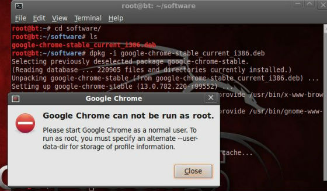
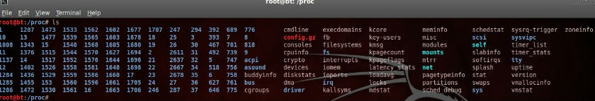
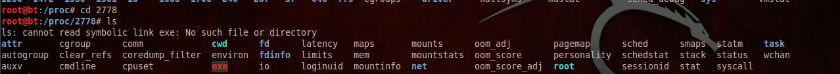

Backtrack5最新版chrome
在windows下用惯了chrome，受不了chrome的诱惑，还是忍不住想把bt5下的firefox给换了。chrome官网下载安装包放置于/root/software/路径下，然后安装。
root@bt:~# cd software/
root@bt:~/software# dpkg -i google-chrome-stable_current_i386.deb
Selecting previously deselected package google-chrome-stable.
(Reading database ... 220905 files and directories currently installed.)
Unpacking google-chrome-stable (from google-chrome-stable_current_i386.deb) ...
Setting up google-chrome-stable (13.0.782.220-r99552) ...
update-alternatives: using /usr/bin/google-chrome to provide /usr/bin/x-www-browser (x-www-browser) in auto mode.
update-alternatives: using /usr/bin/google-chrome to provide /usr/bin/gnome-www-browser (gnome-www-browser) in auto mode.
Processing triggers for desktop-file-utils ...
Processing triggers for python-gmenu ...
Rebuilding /usr/share/applications/desktop.en_US.utf8.cache...
Processing triggers for menu ...
Processing triggers for man-db ...
Processing triggers for python-support ...
运行会出现Google Chrome can not be run as root.错误，解决办法是每次运行的时候手动指定user-data-dir参数即可，这个是我在网上搜的方法。

root@bt:/opt/google/chrome# /opt/google/chrome/google-chrome %U - -user-data-dir=/root/.config/chromium
看看是不是可以用了？chrome比firefox清爽多了感觉。
comments
backtrack5下注册nessus非商用版
打开BT5下菜单Backtrack --> Vulnerability Assessment --> Network Assessment --> Vulnerability Scanner --> Nessus start 会提示插件缺失需要注册。
root@bt:~# Missing plugins. Attempting a plugin update...
Your installation is missing plugins. Please register and try again.
To register, please visit http://www.nessus.org/register/
到官网http://www.nessus.org/register注册，好工具只给注册家用版，填好邮箱注册即可，登陆邮箱会收到一封确认邮件。告诉你在不同系统(windows ...
comments
Read More
genlist + nmap
Usage: genlist [Input Type] [General Options]
Input Type:
-s --scan Ping Target Range ex: 10.0.0.\*
Scan Options:
-n --nmap Path to Nmap executable
--inter Perform Nmap Scan using non default interface
General Options:
-v --version Display version
-h --help Display this information
Send Comments to Joshua D. Abraham ...
comments
Read More
BackTrack5 R1发布
偶然间在逛到www.backtrack-linux.org的时候，发现首页赫然写着：“BackTrack 5 R1 Released! Aug 18th, 2011”，bt有新版本发布了我竟然还不知道。哎~。
从http://www.backtrack-linux.org/downloads下载了Backtrack5 R1在虚拟机里面试了下，还没有硬盘安装，感觉和BT5几乎没什么区别。
不过据说修复了120个bug, 添加了30个新工具,并且升级了70个工具;用命令uname -a查看了下发现内核也从原来的2.6.38升级到2.6.39.4。看来没什么特别需要的话暂时还是不升级好了,BT5挺好的。
这里附上BackTrack5R1的BT种子，感兴趣的话请自行移步Backtrack官网下载。
comments
Read More
dnsdict6获取ipv6地址
[dnsdict6 v1.4 (c) 2010 by van Hauser / THC www.thc.org]
dnsdict6用来查询网站的ipv6地址，如果存在的话就显示，不存在的话就没有显示。可自定义线程数和字典。用法为：
Syntax: dnsdict6 [-t THREADS] domain [dictionary-file]
root@bt:~# dnsdict6 google.com
Starting enumerating google.com. - creating 8 threads for 3001 words...
Estimated time to completion: 2 to 5 minutes
ipv6.google.com ...
comments
Read More
Linux硬件信息目录proc
linux下面/proc是一个貌似普通但是功能却非常强大的目录硬件信息目录，包含核心的硬件信息，内存信息，系统运行进程信息，虽然对于用户来说里面的绝大部分内容都是只读的，但是内容还是会随着系统状态的不同而变化的。
root@bt:/# cd /proc
root@bt:/proc# ls

图中每一个数字目录都代表着当前运行的一个相应的进程，每个数字都是一个进程号:
root@bt:/proc# ps -ax #查看当前进程
root@bt:/proc# cd 2778 #进入进程2778的目录

/proc中另外那些非数字的系统信息文件每个都是有意义的，这里列出一些最重要的：
1、/proc/cpuinfo: CPU信息
2、/proc/memiinfo: 物理内存，交换空间等信息
3、/proc/mounts: 已加载的文件系统的列表
4、/proc/devices: 可用的设备列表 ...
comments
Read More
常用的linux命令
Ubuntu启动3D特效:
root@bt:~# sudo apt-get install compizconfig-settings-manager emerald fusion-ico
注释:compizconfig-settings-manager是提供3D桌面特效的主程序，安装后出现在屏幕右上角，可以详细设置。emerald是提供窗口装饰的程序，fusion-icon是桌面栏中的图标
linux系统图标路径：
root@bt: cd /usr/share/icons
查看最近使用的命令
root@bt:/# history
备份更新源文件
root@bt:~# sudo cp /etc/apt/sources.list /etc/atp.sources.list.backup
root@bt:~# sudo gedit /etc/apt/sources.list
软件包管理命令 ...
comments
Read More
BT5安装openoffice和星际译王stardict
BT5下安装openoffice
上次装了Adobe Reader在BT5下面能看PDF了，后来发现不能看word，ppt，excel也是一件很痛快的事情，虽然安装了vmware-tools之后在windows和BT5直接直接来回拖文件也挺方便，但是也不那么方便，所以今天还是老老实实地把openoffice在BT5下面给安装了。
首先到openoffice官网上下载安装包，因为我选的是deb安装，而不是rpm安装，所以我下载deb包，放在~/software目录下。
root@bt:~# cd ~/software
root@bt:~/software#
root@bt:~/software# tar zxvf OOo_3.3.0_Linux_x86_install-deb_zh-CN.tar.gz
root@bt:~/software# cd OOO330_m20_native_packed-1_zh-CN.9567/
root@bt:~/software/OOO330_m20_native_packed-1_zh-CN.9567# ls
DEBS licenses readmes update
进入DEBS目录，安装该目录下的所有deb包 ...
comments
Read More
Linux目录结构
linux中以树形目录形式来管理的，并且所有的设备都是目录。linux只有一个根目录‘/'，其余的目录都是根目录的子目录。
root@bt:/# ls /dev/sd*
/dev/sda /dev/sda1 /dev/sda2 /dev/sda5
注释:表示只有一块SATA硬盘，有两个主分区(sda1,sda2)，一个逻辑分区(sda5)。
下面对根目录'/'下的子目录来个介绍：
/usr: 包含所有命令，类库，系统帮助手册，即包含了系统运行不会修改的内容
/var: 包含系统运行中会修改的内容，如打印队列，邮件列表等，还有系统中软件的日志信息
/home: 用户的主目录，比如/home/user1,/home/user2，每个用户在这个目录下面都有一个自己的子目录
/dev: 设备文件，如硬盘，光驱，USB设备，内存 ...
comments
Read More
Linux下硬件信息查看
以前linux对硬件的支持不怎么好这是大家普遍的印象，然而现在的linux发行版本对硬件的支持度已经算非常好了，普通的硬件像显卡，声卡等更笨不需要安装任何驱动就可以在linux下直接使用。只不过有时候为了更好地发挥硬件的性能，我们最好还是给硬件安装上驱动。安装驱动首先需要获得硬件的信息，特别是核心芯片的提供厂商。一般的我们都知道CPU的提供厂商有Intel和AMD两个，显卡的提供厂商有ATI,NVIDIA,SIS等。声卡呢，最常见的是创新提供的声卡。一般来说，像显卡，声卡，网卡这样的板卡的制造厂商都只是购买了核心芯片，然后在芯片周围做些外围的电路扩展以实现芯片的功能。这样就可以拿来卖给我们钱了。
Linux对硬件支持的原理linux只是简单的读取硬件的芯片信息用来和自己库里的驱动程序比较，发现有匹配的程序就用该驱动程序来加载硬件，实现各种功能。
当然，linux提供我们各种查询硬件信息的命令:
查看PCI设备
系统中大多数设置都是PCI设备(网卡，声卡，1394火线接口，集成显卡等)
root@bt:/proc# lspci -v #详细pci状态信息
root@bt:/proc# lspci -vv #比上面的更详细
root@bt:/proc# l lspci -vvv ...
comments
Read More